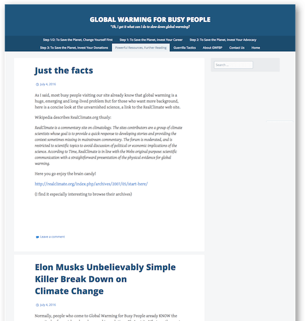
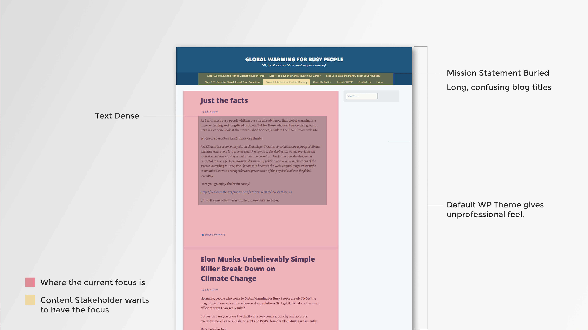
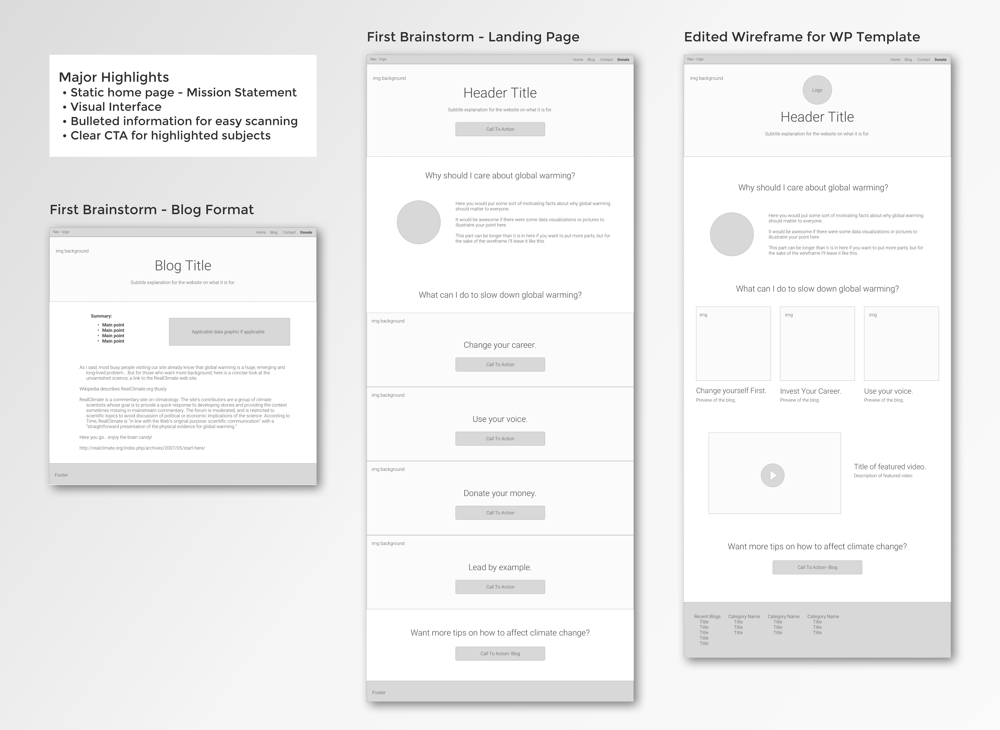
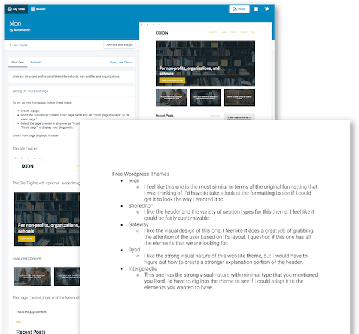
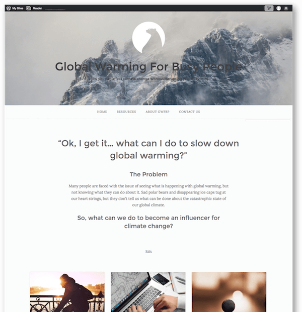
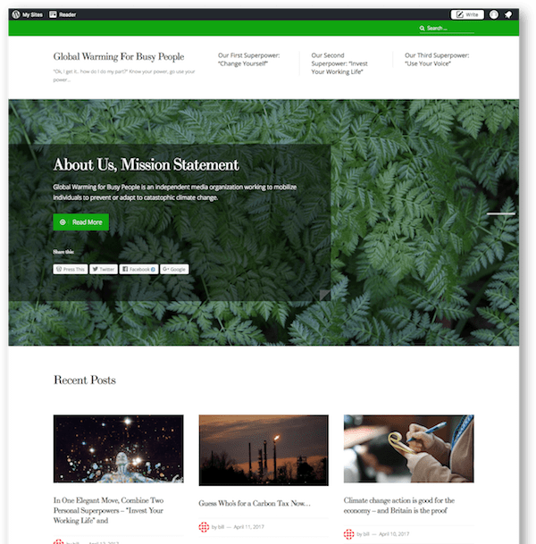

Global Warming for Busy People
Blog - Redesign - Awareness
Problem
Help create a usable, professional website to educate the public about easy ways to affect global warming.
Process
I met with the stakeholder to identify issues with the original website structure, educate the client on user experience principles, and make a plan moving forward. As we proceeded with updates to the website, I had regular consultations with the stakeholder to keep the project on track and keep the focus on creating a user-friendly end product that stayed true to the original goal.
Results
The number of views per month went up 342%
The number of Facebook likes went up 1,184%
Consultation Objectives
Evaluate current website.
Give recommendations.
Educate stakeholder on UX/UI design principles to improve visitor rates to the website.
Research Wordpress themes.
Make adaptations to the product.

Original Site Feedback
I met with the stakeholder to review the website in person. I took careful notes on what the stakeholder focused on and his vision for what he wanted the blog to become. I noted the major focus on the blogs given the current format and that his strong concepts on how to help people make positive change regarding global warming was buried in the navigation bar. In addition, the titles were long and confusing, so it was hard to hear the meat of his ideas.

Recommendations
De-emphasize the blog in the landing page layout by creating a static landing page that highlighted the mission statement.
Simplify the navigation and link titles.
Increase the number of images and videos to create a lighter UI that still conveys the intention of Global Warming for Busy People.
Create a summary at the top of blogs to increase scannability of more word dense parts of the site.


Wordpress Research
Upon researching multiple WP themes, I narrowed the options down to 5. I had my client review them and he ultimately decided on Ixion.

Why Ver.1 was Revised
The layout to became disorganized as more edits were made by both the designer and stakeholder.
The stakeholder learned more about marketing and usability, changing his opinion of what should be done with the website.
Metrics showed that most of the traffic was coming from the blog posts shared through social media, so the stakeholder wanting to bring the focus back to a blog format.
The goal of the company went from becoming a non-profit to an independent blog.

Where GWFBP is Now
New theme: Prosperity
Maintain the same photographic interface to lighten text density.
Adapts for the blog focus while still keeping the mission statement in the forefront.
Professional aesthetic with flexibility.
Upgraded to Business Professional website, allowing for more options for customization, metrics, and support.
Results
Website views increased by 342%
Facebook likes have increased by 1,184%